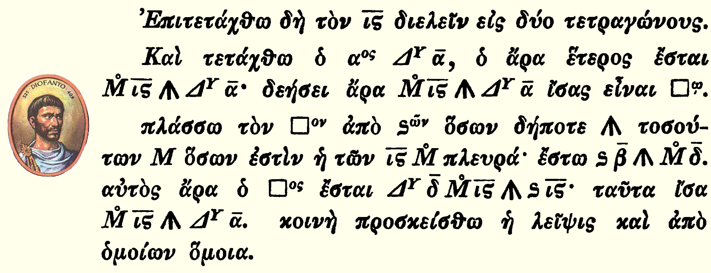

El cero, los números negativos, las interpretaciones y abstracciones de carácter geométrico o cinemático; junto con las mejoras progresiva de la notación y la sintaxis algebraica iniciada por Diofanto: representan el único progreso notable del Álgebra al final de la Edad Media; antes de «El Renacimiento». En matemáticas, al renacimiento se le debería llamar racionalismo; siendo René Descartes el mejor representante de ese impulso que aún no culmina.
Sección 1.1 El lenguaje de los matemáticos
Uno de los principales objetos de las matemáticas superiores es demostrar teoremas. Los teoremas son los pilares donde se sustenta el gran edificio matemático: en general todas las ciencias. No se debe dejar a un lado la frase atribuida a Pitágoras de Samos “Dios habla matemáticas”.
Los teoremas matemáticos, sin embargo, no se expresan de forma oral, sino escrita. La mayor dificultad que presentan las matemáticas para el profano es, precisamente, la lectura e interpretación de esos teoremas; no tanto la lógica de sus construcciones, sino más bien la semiótica y la abstracción que rodean sus signos. Los matemáticos delimitan: el contexto, los objetos, sus propiedades y las herramientas que aplican sobre ellos.
Es comprensible que la rigurosidad de sus planteamientos requiera de un lenguaje formal y de esquemas propios para representar su enfoque axiomático; pero igual comprensión debe permitirse (y suponerse) para que otro ser humano —indistintamente de su especialización o nivel académico— pueda aproximarse al entendimiento de lo que proponen. La estricta formalidad del lenguaje matemático, es el primer causante del alejamiento de las grandes mayorías a sus asuntos.
Subsección 1.1.1 El Pretérito del Número; Mesopotamia
Los asiriólogos estudiosos de las civilizaciones mesopotámicas han determinado que durante el período llamado arcaico (3200 a 2800 a.C), los signos numéricos se organizaron en una docena de sistemas metrológicos diferentes, los cuales designaban cantidades discretas, unidades de superficie y volumen. En ese período, los signos utilizados adquieren valor dependiendo del sistema metrológico en el que se empleen. El siguiente nivel se alcanza en el llamado período protodinástico (2800-2350 a.C.), «la escritura se desarrolla y permite la reproducción del lenguaje hablado». Se minimiza el plural de sistemas metrológicos, al poder escribirse las unidades correspondientes de manera explícita. Cuando el imperio se centraliza (alrededor del principio del segundo milenio), esa diversidad se unifica hacia un sistema de escritura contable: la escritura cuneiforme [6]; que evoluciona al final del ese período hacia un sistema único de base 60 semejante al utilizado anteriormente para las unidades discretas (sistema S).
Por ejemplo, el número decimal \(14646\text{,}\) equivaldría en base 60 a: \(446\text{;}\) ya que \(4 \times 60^2 + 4 \times 60^1 + 6 \times 60^0 = 14646\) [Nota A.4.1]; se requiere de otros caracteres o signos para expresar cualquier número en la base 60. Para la base decimal, sólo requerimos de diez; y para la binaria de dos. El número \(214646\text{,}\) se puede escribir en base 60, como:
xbQ; completando con letras los dígitos más allá del décimo.Relictos de esa herencia —base 60— es evidente cuando medimos ángulos; también cuando expresamos coordenadas geográficas o nos referimos a la medida del tiempo (en horas, minutos y segundos); incluso cuando contamos en docenas, dado que 60 es divisible por 12, la docena es una forma natural de subdividir las unidades en el sistema sexagesimal. A partir de ese momento, en Babilonia y su área de influencia, quedan establecidos los números abstractos; cuya escritura y manejo ya no dependen de los objetos que designan (Babilonia se cita sólo como ciudad de referencia; otras grandes urbes le precedieron). La figura a la derecha, muestra la evolución de los numerales mesopotámicos; antes y después del eclipse de la civilización sumeria [19]. Ese fue un largo proceso de liberación del número de las unidades contables y metrológicas [12].
Wikipedia].Subsección 1.1.2 Los Griegos
Los griegos, luego del período clásico, aún visualizan y conciben al número apegados a la geometría (¡un milenio después de que los números se pasearan libremente en la mente de maestros y estudiantes en Babilonia!).
El gran matemático griego Euclides (ca. 300 a.C.), retoma lo pretérito y define al número como una multiplicidad de unidades; siendo la unidad un concepto primitivo no necesario de definir, “que ya está ahí”. En su imponente libro “Los Elementos”, Euclides razona sobre números que no especifica: ni siquiera dice si las representaciones numéricas que utiliza mediante segmentos, equivalen a 1, 2 o 3, etc.; así que podemos definirlos como: «representaciones de números abstractos». Simplemente cuando quiere expresar un número, lo designa mediante un segmento; al cual le aplica razonamiento matemático mediante un enfoque axiomático [18].
Los estudios gramaticales se iniciaron en Grecia a partir del siglo V a.C.; estos estudios se vincularon con «el arte de escribir bien», dado que en ese tiempo se consideraba el lenguaje escrito más importante que el lenguaje oral. No es casual, que, a partir de ese momento en los textos griegos conocidos (principalmente de Euclides, Arquímedes y Apolonio), también quedara establecido el «canon» ideal para los textos matemáticos.
Los griegos hicieron de la geometría una herramienta que le permitía incursionar en la teoría de números, que expresaban como razones geométricas. Esta abstracción griega del número, perduró más de un milenio y medio.
Subsección 1.1.3 Los Indios
En la literatura árabe y persa, aparecen referencias al respecto de que los indios tuvieron la gloria de grandes logros matemáticos 1 ; entre ellos:
- El sistema posicional decimal.
- El refinamiento del cálculo aritmético en la base decimal.
El cero y los números negativos 2 , aparecen en la matemática india a partir de la alta Edad Media occidental. El cero, fue introducido primeramente sólo como símbolo de numeración antes de ser considerado como un número; pero tanto como símbolo de relleno o número, el cero fue un gran avance para las matemáticas. Pero no se puede desconocer que el “cero” ya era conocido por los babilonios de una manera menos precisa. Los que no asimilaron la existencia del cero y de los números negativos, fueron los griegos; probablemente su teoría axiomática de las razones de magnitudes, resultaba inadecuada para operar con esas abstracciones 3 .
Producto del estudio y del análisis, los «números» se diversifican. Aparecen «nuevos números» como resultado de operaciones y de manipulación algebraica; entidades numéricas que en principio fueron llamadas anti números «falsos», «ficticios», «absurdos», «imposibles», «imaginarios», etc.; e.g. formalmente, ateniéndose a la definición, no debe tener sentido la diferencia \(a-b\) de dos enteros naturales cuando es \(a \lt b \text{.}\) Sin embargo, este “sin sentido”, no era tal para los indios; ellos eran conscientes de la interpretación de los números negativos en algunos casos, como las deudas comerciales 4 (algo semejante ocurrió en el entorno babilonio). “Para los griegos de la época clásica, buscadores ante todo de la claridad, estas extensiones hubieran sido inconcebibles; solo podían venir de calculadores más dispuestos que ellos a depositar una confianza un poco mística en el poder de sus métodos y a dejarse llevar por el mecanismo de sus cálculos sin pararse a comprobar lo licito de cada paso, confianza en general justificada a posteriori por los resultados exactos a que conducía la extensión a estos nuevos entes matemáticos de las reglas de cálculo únicamente validas, en rigor, para los números conocidos anteriormente” [6].
Subsección 1.1.4 Diofanto de Alejandría
No todos los griegos fueron atrapados por el rigor de la teoría de magnitudes, Diofanto 5 hace grandes esfuerzos y rescata de las tradiciones pasadas, las reglas heredadas de los egipcios y de los babilonios; que aún sobrevivían sin modificaciones entre los calculistas profesionales (llamados «logísticos»). Diofanto, no se complica con las representaciones geométricas e inventa la suya propia: desarrolla de modo natural reglas para el cálculo algebraico abstracto. Actúa con libertad, sin preocuparse mucho por las ideas generales que imperaban; como la concepción axiomática de las leyes de composición 6 . Entre otras, Diofanto enuncia la «regla de los signos», y realiza cálculos con número negativo; relacionado con el cálculo de polinomios, permitiendo desarrollar productos tales como: \((a - b)(c - d)\text{;}\) pero no llega a “conocer” o enunciar los número negativo como objetos numéricos independientes [6].

Diofanto rompe con el «canon» ideal griego para los textos matemáticos. En su Aritmética, opta por un estilo completamente diferente al establecido; muy alejado al de Euclides. A pesar de que evita la teoría axiomática de las razones de magnitudes, cada problema es seguido por el razonamiento que conduce a la determinación de una solución. Utiliza regularmente símbolos para formular los problemas y el tipo de prueba que les sigue, los cuales involucran enunciados relacionados con números e incógnitas; por primera vez usa un símbolo literal para representar una incógnita; otro para identificar a los números desconocidos “\(\varsigma\)” 7 , otro para los ángulos rectos, etc. [Cuadro 1.5]; sin embargo, estos símbolos difieren en el fondo de la manera como se utilizan actualmente (en un entorno puramente simbólicos). Al parecer ayudaron a formar el significado de las declaraciones; como los símbolos en una abreviatura. Pero sin duda alguna, sus símbolos ayudaron a mejoraron la capacidad de reconocimiento de las expresiones, de la misma manera como lo hace una escritura técnica especializada [9]; en ese sentido, facilitaron la abstracción y comprensión de elementos matemáticos complejos; por sus méritos, Diofanto es considerado uno de los padres del álgebra[20].
| Signo | Significado | Origen-griego |
| \(\varsigma\) | número desconocido | sigma minúscula |
| \(\pitchfork\) | signo negativo | una \(\wedge\) con un \(\mid \) central |
| \(\Delta^{\Upsilon}\) | incógnita cuadrática | delta superíndice epsilon |
| \(\kappa^{\Upsilon}\) | numero cúbico | kappa superíndice epsilon |
| \(\Delta^{U}\) | incógnita cúbica | delta superíndice’U’ |
| \(\square\) | un número al cuadrado | |
| \(\bot\) | catetos de un \(\Delta\) rectángulo | contexto pitagórico |
| \(\overset{\circ \>}{M}\) | las unidades | inic. de la palabra ’monades’ |
Subsección 1.1.5 Los Árabes
Desde lejanas geografías, los árabes portaron en sus caravanas y en sus mentes, conocimiento de todo tipo y de todas las áreas del saber. Entre muchos: libros, instrumentos, técnicas, fórmulas y métodos de resolución de problemas matemáticos; con todo esmero se dedicaron a recopilar matemática y astronomía; de la India, de Grecia y de todo el mundo antiguo por donde circularon, drenando y absorbiendo sus saberes. Pero los árabes no se limitaron a ser simples transportes para las ciencias; las cultivaron, las mejoraron, las sistematizaron y las asentaron por escritos en libros y bibliotecas; ese sin duda fue su mayor aporte para la humanidad. Por ellos y de la mano de ellos, en su forma y con su grafía, el mundo occidental se entera del conocimiento pasado; «olvidado, perdido o extraviado»; gran parte de lo que se sabe del mundo antiguo, lo dice la obra árabes (lamentablemente no pudieron decirnos todo … gran parte se perdió o continúa extraviado).
El impulso civilizatorio (con carácter de conquista) que Alejandro Magno impuso sobre los pueblos del cercano oriente y mediterráneos durante el llamado Período Heleno (323 a. C.-30 a. C.), no se agota y culmina con el derrumbe del Imperio Romano (entre los siglos V y VII); no se diluye en la Edad Media. Fue retomado por los árabes y cultivados en sus Escuelas y Universidades; en tinieblas fue esparcido por el mundo y también al cúmulo de reinos que se disputaban la península ibérica (donde aún no existía políticamente España). Los árabes asentaron en iberia al Estado Al Andaluz, al cual sembraron de jardines, y palacios; en ellos amasaron los conocimientos propios y del mundo antiguo (babilonios, egipcios, indios, griegos, etc.). De los peninsulares castellanos, pero también de los moros africanos y de los árabes, es el mérito de que el conocimiento antiguo y “moderno” llegaran al mal llamado Nuevo Mundo; donde el helenismo aún prosigue conquistando espacio y alumbrando oscuridades.
Así como en su tiempo hicieron los griegos, los árabes fueron eficiente en organizar y axiomatizar los conocimientos matemáticos, tantos que hicieron propios, los provenientes de culturas anteriores, como los que alcanzaron en virtud del estudio, de la razón y de la constancia.
Los árabes, luego del siglo IX, introdujeron el concepto fundamental de ecuación; como una concatenación de argumentos lógicos (no simbolizados). Una relación que combinaba una magnitud desconocida (la incógnita), con otras magnitudes conocidas; todo ello en un contexto geométrico (frecuentemente relacionados con problemas de reparto de herencias de tierras). Luego razonaron, que, dependiendo del problema, la incógnita podía ser una magnitud geométrica o un número; se dieron cuenta que podían manipular las magnitudes geométricas, mediante un cálculo aritmético realizado mediante ecuaciones que relacionaban números; había nacido una nueva álgebra. Luego del siglo XII, con esta álgebra, realizaron cálculos aproximados en notación decimal (con cifras detrás de la coma); cálculos polinómicos muy elaborados de potencias –cuadráticas, cúbicas y cuartas– e incluso potencias negativas; y finalmente polinomios de raíces 8 de orden cualquiera. ¡Europa aún ignoraba todo eso!
Los árabes siguieron escribiendo frases y sentencias para tratar las ecuaciones en lenguaje ordinario, a pesar de los logros de los matemáticos indios y del heleno–africano Diofanto; sólo los coeficientes fueron indicados numéricamente.
Subsección 1.1.6 René Descartes
“Entonces apareció Descartes, e hizo lo contrario de lo que debía hacer; en vez de estudiar la naturaleza trató de imaginarla. Era el geómetra más grande de su siglo, pero la geometría deja al espíritu tal como lo encuentra. El de Descartes se inclinaba demasiado a la invención. Las obras del primero de los matemáticos casi no son otra cosa que novelas de filosofía. Un hombre que desdeñó las experiencias, que no citó jamás a Galileo, que quería construir sin materiales, no podía levantar más que un edificio imaginario. Lo que tenía de novelesco fue aceptado, y las pocas verdades mezcladas a sus quimeras fueron al principio combatidas”[35].
En Europa, a finales del siglo XV, El Renacimiento, permitió que la curiosidad humana emprendiera el rescate de sus valores perdidos, igualmente hizo posible la aceptación de nuevos cánones; empezó a diferenciarse una ciencia pura sin el predominio de la iglesia católica. Un logro que el mundo musulmán ya había alcanzado por lo menos cinco siglos antes. A inicios del siglo XVI, los matemáticos italianos comenzaron a trabajar con ecuaciones de tercer y cuarto grado; pronto se vieron obligados a aceptar nuevos entes y campos numéricos como había sucedido con los números negativos: los llamados imaginarios. El francés Viète en 1646, introdujo las letras para designar a todos los elementos en las ecuaciones algebraicas (datos e incógnita).
René Descartes en su Geometría (apéndice de El Discurso del Método; 1637 [14]), anuncia que una ecuación algebraica tiene tantas raíces como grados; pero explica que estas raíces no siempre eran reales; en su texto introdujo formalmente el viejo término «imaginario» (Albert Girard , ya los denominaba «imposibles» 1629). Sin embargo, ambos consideraban a esos extraños números como intermediarios para tratar problemas en forma general, no lo reconocieron como objetos numéricos propios (eso tardó un poco más)[18].
La notación algebraica fue perfeccionada por Viète y Descartes; a partir de este último, la notación algebraica ha sido (poco más o menos) la que empleamos hoy[6].
Uno de los legados más perdurables de René Descartes fue el desarrollo de la geometría analítica (llamada geometría cartesiana), donde utiliza un refinado lenguaje simbólico; lenguaje que se ha generalizado y enriquecido por los matemáticos luego de él, esta herencia se ha extendido a toda la matemática. Descartes inició la convención de representar con letras las incógnitas en las ecuaciones e.g., \([ x , y , z ]\text{;}\) igual para los datos conocidos e.g., \([
a , b , c ]\text{.}\) También fue pionero en la notación estándar que usa súper índices para mostrar las potencias o exponentes; e.g., los \(2\) utilizados en \(x^2\) para indicar \(x\) al cuadrado [39].
Subsección 1.1.7 Diversidad numérica y las reglas del álgebra
La evolución de los números a lo largo de la historia ha sido testigo de la emergencia de nuevos conceptos numéricos, resultado tanto de operaciones matemáticas como de reflexiones sobre su significado. Estas nuevas entidades, inicialmente denominadas de diversas maneras: ‘anti números’, ‘falsos’, ‘ficticios’, ‘absurdos’, ‘imposibles’, ‘imaginarios’, etc.. Por ejemplo, la noción de números negativos, parecía carecer de sentido en ciertos contextos para algunas culturas antiguas; para los griegos de la época clásica, buscadores ante todo de la claridad, estas extensiones hubieran sido inconcebibles. Pero encontró justificación en situaciones como las deudas comerciales; reconocidas por civilizaciones como la india y la babilónica.
Formalmente, ateniéndose a las antiguas definiciones, no debe detener sentido la diferencia \(a-b\) de dos enteros naturales cuando es \(a \lt b \text{;}\) pero los indios eran conscientes de la interpretación de los números negativos en algunos casos, como las deudas comerciales (algo semejante ocurrió en el entorno babilonio). A pesar de la resistencia inicial a estas extensiones numéricas, su adopción demostró ser esencial para la evolución de las matemáticas, abriendo nuevas posibilidades y revelando la profundidad de su naturaleza. Confianza en general justificada a posteriori por los resultados exactos a que conducía la adopción de estos nuevos entes matemáticos, utilizando las reglas de cálculo únicamente validas, en rigor, para los números conocidos anteriormente” [6]; pero fue necesario adecuar la sintaxis matemática.
En álgebra elemental, se conocen estas expresiones y transformaciones fundamentales que imperan sobre la “sintaxis”, como reglas; reglas de supresión de paréntesis, reglas de signos, etc. Al aplicar estas reglas (combinaciones de trasformaciones elementales), uno se puede olvidar que cada letra con que modernamente se trabajan las expresiones algebraicas, es sólo un símbolo que representa a un número; se puede proceder mecánicamente con independencia del significado de la transformación; atentos solamente a las reglas que rigen las trasformaciones.